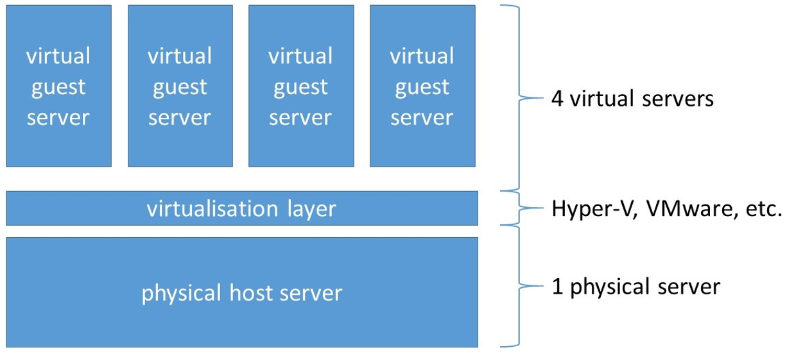
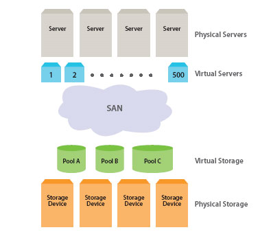

There are many ways in which computers can help cut down on our use of energy. Computers are steadily improving the amount of energy that they use with the smaller computers producing less CO2 than larger desktop computers.
| Computer | Power Used | kg Co2/year |
|---|---|---|
| Apple Mac mini (MD387) | Sleep: 1.2372W | 20.45 |
| 2.5Ghz Intel Core i5, 4GB RAM | Idle: 10.2648W | kgCO2 |
| Off: 0.26028W | ||
| Acer Veriton N281G | Sleep: 0.95W | 37.17 |
| 1.8GHz Intel Atom PC | Idle: 18.81W | kgCO2 |
| Off: 0.48W | ||
| Apple MacBook Air (MC966) | Sleep: 0.97W | 7.04 |
| 13.3 inch 1.7GHz Intel Core i5 Laptop | Idle: 4.28W | kgCO2 |
| Off: 0.17W | ||
| HP Pavilion DM1 | Sleep: 0.8W | 15.99 |
| 1.3 GHz Intel Laptop | Idle: 9.57W | kgCO2 |
| Off: 0.7W |
Processors are becoming greener, with each generation employing smaller transistors that require less power. Using multiple processors, or ‘cores’, on the same chip also reduces energy consumption as collectively they require less cooling. Intel’s 4th generation processors, Haswell, or the 4th Generation Core Processor can go as low as 6 watts, measured by system design power (SDP).
Intelligent software can be used to manage energy consumption by the servers. It monitors server usage to see if it can turn down or turn off components, reduce processor speed or shut down memory modules.
Server virtualisation is the masking of server resources, including the number and identity of individual physical servers, processors, and operating systems, from server users. The server administrator uses a software application to divide one physical server into multiple isolated virtual environments. The virtual environments are called virtual private servers.

Storage virtualisation is the pooling of physical storage from multiple network storage devices into what appears to be a single storage device that is managed from a central console. Storage virtualisation is commonly used in a storage area network (SAN).

Google cuts down its carbon based energy use — Google has been taking measures to eliminate its carbon footprint by utilising renewable energy sources such as wind. In fact, Google has invested in a wind farm superhighway (transmission network) involving an undersea cable located off the east coast of the United States. The wind power potential there could produce 6,000 megawatts of energy, enough electricity to power approximately two million homes.
Global temperature puzzle.